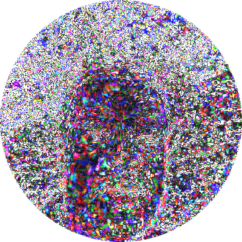
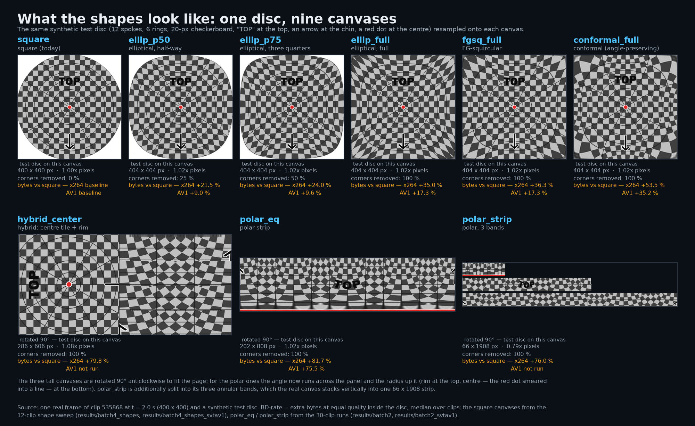

A circle message is an ordinary square video file (300 to 400 px a side).
The corners are simply white. The app draws a round mask on top.
So the codec (the program that shrinks video; H.264 here) already compresses a square with a circle inside.
A circle message is an ordinary square video file (300 to 400 px a side).
The corners are simply white. The app draws a round mask on top.
So the codec (the program that shrinks video; H.264 here) already compresses a square with a circle inside.
Sensors, encoders, decoders, GPUs and screens are all wired in rows and columns.
The circle exists only as a mask. Any polar file would be unpacked back to a square on every phone.
Cut the circle at the chin and unroll it: every row is one angle, every column one distance from the centre.
Hope: a tilt of the head (the picture spinning about the centre) becomes a plain vertical shift, and codecs love shifts.
Unroll, hand the strip to an unchanged standard codec, roll it back.
Nothing inside the codec was touched, so any gain or loss comes from the geometry alone.
PSNR = a closeness-to-the-original score in dB; about 1 dB is a visible step.
Bytes at equal quality = file size read off at the same PSNR inside the circle.
A 30-s circle at our middle quality setting (about 0.5 Mbit/s): square 1.8 MB, elliptical 2.5 MB, polar 3.3 MB.
Polar strip needs 1.82x the bytes, the gentlest disc-to-square map 1.37x. Square smallest on 30 of 30 clips.
Original, square re-encode, polar round trip. The strip is the internal form, not what you watch.
A polar strip has one column per radius, so the outer ring gets far fewer pixels than in the square and the centre gets too many.
Measured: rim -3.0 dB, centre only -0.6 dB.

Codecs predict each block as a shift of the last frame. On the strip an ordinary sideways move is a bend, so prediction fails.
Also: the white corners are already almost free (flat blocks cost nearly nothing).
Repeating a few rows across the cut (guard rows): worse, 1.92x. Cutting at the chin hides the visible seam, saves no bytes. Rings of equal area: best polar, still 1.76x. Gentler disc-to-square maps: 1.62x and 1.37x.
Six canvases, 12 clips, both codecs: ellipses inflated half-way and all the way, a squircle, an angle-preserving conformal map, and a centre-tile hybrid. The less warped the canvas, the cheaper it is; the least warped is the square.
| shape (corners removed) | H.264 (x264) | AV1 |
|---|---|---|
| elliptical, half-way (disc fills 85 % of the frame) — 25 % | +21.5 % | +9.0 % |
| elliptical, three quarters — 50 % | +24.0 % | +9.6 % |
| elliptical, disc stretched to the full square — 100 % | +35.0 % | +17.3 % |
| FG-squircular (squircle rings instead of ellipses) — 100 % | +36.3 % | +17.3 % |
| conformal (the only angle-preserving map) — 100 % | +53.5 % | +35.2 % |
| hybrid: exact centre tile + polar rim packed below — 100 % | +79.8 % | not run |
Nine canvases, one disc. The test grid shows where each map stretches and squeezes; the videos are the real canvases a codec would encode.

Spinning 3 degrees per frame: -14 %. Everything people actually do (hold still, sway, lean in) costs more. Real circles are shaky and sideways, not spinning.
Newer codecs (AV1, VVC) already describe turn, zoom and shift with 4 to 6 numbers per block, on the square grid.
Literature: about 1 % saved on average, 10 to 20 % only on rotation-heavy footage.
Same 30 circles under AV1 (SVT-AV1, and libaom with its rotation and zoom tools switched on and off). The square still wins on every real clip; polar keeps an edge only on a fast spin.
| H.264 (x264) | AV1 | |
|---|---|---|
| polar strip, real clips: bytes vs square | 1.82x | 1.76x |
| gentlest disc-to-square map, real clips | 1.37x | 1.19x |
| polar strip, fast spin (3 degrees per frame) | -14 % | -34 % (SVT-AV1) |
| polar on fast spin with AV1's turn-and-zoom tools off / on (libaom) | -32 % / -21 % | |
| plain square on fast spin with those tools off (libaom) | +20 % more bytes |
Log-polar = polar with rings that widen toward the rim, like the eye's retina.
Still-only test = the same pipeline with motion prediction switched off.
1.82x the bytes. Closed.
Measured: AV1's own turn-and-zoom tools leave polar a 21 % edge on a fast spin only, and real circles do not spin. Not worth building.
More bits on the face, fewer on the rim. Works today.
| variant | bytes vs square | 95 % interval | quality at the same bytes (dB) | canvas pixels vs square |
|---|---|---|---|---|
| square (today) | 1.00 | - | 0 | 1.00 |
| gentlest disc-to-square map (elliptical) | 1.37 | 1.31 to 1.45 | -1.7 | 1.02 |
| elliptical map, fewer pixels | 1.35 | 1.29 to 1.41 | -1.8 | 0.80 |
| gentle disc-to-square map (Shirley-Chiu) | 1.62 | 1.56 to 1.70 | -2.5 | 1.02 |
| polar, rings of equal area | 1.76 | 1.66 to 1.93 | -2.8 | 0.79 |
| polar strip | 1.82 | 1.71 to 1.90 | -3.2 | 1.02 |
| polar + repeated rows across the cut | 1.92 | 1.83 to 2.10 | -3.4 | 1.10 |
| polar, 1.6x more pixels at the rim | 2.03 | 1.93 to 2.14 | -3.5 | 1.60 |
| polar, half the pixels | 2.09 | 1.84 to 2.25 | -4.8 | 0.51 |
| control: resampling only | 1.12 | 1.09 to 1.16 | -0.8 | 1.00 |
| control: inverse warp on the square | 1.12 | 1.08 to 1.16 | -0.8 | 1.00 |
| control: 1.6x pixels only | 1.32 | 1.28 to 1.35 | -1.3 | 1.60 |
30 real circles (300, 384, 400 px), first 10 s, x264 tuned for PSNR, six quality settings per variant.
Metric: PSNR and SSIM (a second quality score) inside the disc; bytes at equal quality (BD-rate) per clip, then the median with a 95 % interval (the range the true median is 95 % likely to fall in).
Controls isolate resampling, the inverse warp and the pixel budget from the codec's own loss.
AV1 pass: the same clips and synthetic motions under SVT-AV1 (PSNR tuning, same masks and settings per variant); libaom with its global and warped motion switched on and off.